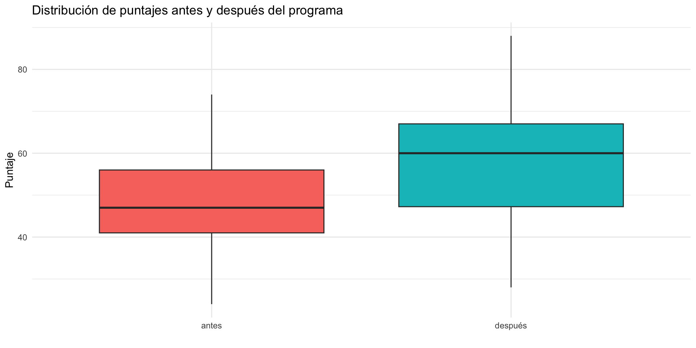

Comparando grupos
En las ciencias sociales, es común que surjan preguntas sobre cómo difieren dos grupos en relación con un aspecto particular de interés. ¿Las mujeres dedican más tiempo al trabajo no remunerado que los hombres? ¿Los votantes urbanos muestran un mayor apoyo a políticas progresistas en comparación con los votantes rurales? Cuando comparamos dos grupos, lo que buscamos es identificar si existen patrones, diferencias o similitudes que podamos entender e interpretar sobre el fenómeno que estamos estudiando. Por ejemplo, si nos interesa el tiempo promedio que hombres y mujeres dedican a actividades de ocio, nuestra atención se centrará en observar si existe una diferencia notable entre los grupos y qué podría explicar esta variación.
Esta comparación entre dos grupos puede involucrar diferentes tipos de variables. Por ejemplo, si estamos estudiando el tiempo de ocio (una variable cuantitativa), nos interesa la media o promedio de cada grupo. En cambio, si analizamos una pregunta sobre apoyo o rechazo a una política (una variable cualitativa o categórica), nos fijamos en las proporciones, como el porcentaje de personas que apoyan dicha política en cada grupo. En cualquiera de estos casos, lo que realmente queremos es comprender si la relación observada refleja una característica propia de los grupos o si podría haber sido producto del azar.
Cuando comparamos dos grupos, estamos explorando la relación entre dos tipos de variables: la variable explicativa y la variable respuesta. La variable explicativa es aquella que utilizamos para dividir o categorizar a los grupos que estamos comparando. Es la que “explica” o permite estructurar la comparación. Por ejemplo, si queremos analizar si existe una diferencia en los ingresos promedio entre hombres y mujeres, el género sería nuestra variable explicativa. En este caso, es una variable dicotómica porque tiene solo dos categorías: hombres y mujeres. Por otro lado, la variable respuesta es la característica que estamos midiendo o evaluando en cada grupo. Es la “respuesta” que queremos observar en función de las categorías de la variable explicativa. Siguiendo el ejemplo, los ingresos promedio serían la variable respuesta, ya que es el valor que estamos comparando entre hombres y mujeres.
Ahora, la variable respuesta puede ser de dos tipos:
Cuantitativa: Si los ingresos promedio se expresan en términos numéricos (por ejemplo, cantidad de dinero).
Cualitativa: Si estamos analizando proporciones, como el porcentaje de personas que tienen ingresos por encima de cierto umbral.
La relación entre estas dos variables es lo que define el análisis. Queremos ver cómo la variable respuesta cambia o se distribuye según las categorías de la variable explicativa. Si estamos comparando el apoyo a una política entre votantes rurales y urbanos, podemos calcular directamente las proporciones de apoyo en cada grupo y observar si son distintas. Si queremos analizar los ingresos entre hombres y mujeres, podemos calcular las medias de cada grupo y compararlas.
Este capítulo explora cómo comparar dos grupos cuando trabajamos con variables cuantitativas y cualitativas, pruebas con más de dos grupos y un acercamiento a herramientas no paramétricas.
Ahora, el capítulo anterior, discutimos cómo la estimación nos permite aproximarnos al verdadero valor de un parámetro poblacional, como la media o la proporción, a partir de una muestra representativa. Gracias al Teorema del Límite Central, sabemos que si tomamos múltiples muestras de una población, los estadísticos obtenidos (como la media muestral) seguirán aproximadamente una distribución normal alrededor del verdadero parámetro poblacional. Esto nos permite no solo estimar ese parámetro desconocido, sino también cuantificar la incertidumbre de la estimación mediante un intervalo de confianza.
Cuando comparamos dos grupos, la lógica es la misma. En lugar de trabajar con una sola media, nos interesa analizar la diferencia entre las medias o la proporciones de dos grupos. Por ello, si cada media muestral sigue una distribución aproximadamente normal, la diferencia entre ambas también lo hará.
Recuerda que en estadística inferencial, cuando tomamos una muestra, no estamos observando a toda la población, sino solo a una parte de ella. Esto significa que cualquier estadístico obtenido puede variar de una muestra a otra, debido a la variación aleatoria inherente al muestreo. Esto nos permite construir un intervalo de confianza para la diferencia de medias y realizar pruebas de hipótesis sobre esa diferencia. Nuestro análisis se centra en dos aspectos principales:
Estimación: Calculamos la diferencia entre las medias de los dos grupos y construimos un intervalo de confianza que nos indique un rango plausible para esa diferencia en la población.
Contraste de hipótesis: Evaluamos si la diferencia observada entre los grupos es lo suficientemente grande como para considerarla estadísticamente significativa, es decir, si no se debe simplemente al azar.
Rows: 200
Columns: 2
$ genero <chr> "hombre", "mujer", "hombre", "hombre", "mujer", "mujer", "m…
$ horas_ocio <dbl> 15, 9, 13, 12, 13, 11, 13, 15, 14, 11, 14, 16, 10, 13, 13, …
Podemos utilizar describeBy del paquete psych para realizar los resúmenes numéricos pertinentes por cada nivel (categoría) de la variable genero.
Descriptive statistics by group
group: hombre
vars n mean sd median trimmed mad min max range skew kurtosis se
X1 1 100 15.73 2.47 15 15.59 2.97 11 24 13 0.58 0.35 0.25
------------------------------------------------------------
group: mujer
vars n mean sd median trimmed mad min max range skew kurtosis se
X1 1 100 12.13 2.31 12 12.11 1.48 6 17 11 0 -0.39 0.23
Esto nos permite comparar cómo varían las horas de ocio entre ambos grupos, pero una manera aún más intuitiva de explorar estas diferencias es mediante una representación gráfica. Para ello, utilizamos un boxplot, que nos muestra la distribución del tiempo de ocio según el género.
El gráfico muestra una diferencia en la distribución entre los grupos. La clave aquí es que tan diferentes son como para poder afirmar que efectivamente el género influye o explica la variación en las horas de ocio.
Podemos generar un resumen descriptivo con la media y la desviación estándar utilizando dplyr
# A tibble: 2 × 4
genero promedio sd n
<chr> <dbl> <dbl> <int>
1 hombre 15.7 2.47 100
2 mujer 12.1 2.31 100
Para cuantificar esta diferencia, necesitamos calcular un estadístico de comparación, que en este caso es la diferencia de medias muestrales, representada por \(\Delta\) (Delta).
Por lo que la diferencia de medias \(\Delta \bar{x}\) es:
\[
\Delta \bar{x} = \bar{x}_{Hombres} - \bar{x}_{Mujeres} = 15.8 - 12.2 = 3.6
\]
La distribución de ambos grupos es la siguiente
Cálculo del intervalo de confianza
De la misma forma que para construir un intervalo de confianza con una media. Para realizar un intervalo del 95% para la diferencia de medias, utilizamos la misma fórmula:
\[
\text{IC}_{\Delta \bar{x}} = \Delta \bar{x} \pm z/t \cdot \text{EE}
\] ————————————————————————
Dado que estamos comparando dos grupos distintos (hombres y mujeres), cada uno con su propia media, desviación estándar y tamaño muestral, la incertidumbre en la diferencia de medias proviene de ambas muestras. Por lo tanto, el error estándar (EE) de la diferencia de medias se obtiene combinando los errores estándar individuales de cada grupo. La formula para el EE responde a la integración de ambas variables , donde:
Para dos estimaciones provenientes de muestras independientes (una no está relacionada con la otra, más sobre este caso en “Comparaciones de grupos relacionados”) con errores estándar estimados \(se_1\) y \(se_2\), la distribución de muestreo de su diferencia tiene un error estándar estimado dado por:
\[
\text{Error estándar}
= \sqrt{(se_1)^2 + (se_2)^2}.
\]
Cada estimación tiene un error de muestreo, y las variabilidades se suman para determinar el error estándar de la diferencia entre las estimaciones.
Recuerda que el error estándar estimado de una media muestral está dado por:
\[
se = \frac{s}{\sqrt{n}},
\]
donde \(s\) es la desviación estándar muestral y \(n\) es el tamaño de la muestra.
Por lo que si \(n_1\) y \(n_2\) son los tamaños de las muestras para las primera y segunda muestra, respectivamente. Y \(s_1\) y \(s_2\) las desviaciones estándar muestrales, que son estimaciones de las desviaciones estándar poblacionales correspondientes \(\sigma_1\) y \(\sigma_2\). La diferencia entre las medias muestrales \(\bar{x}_2 - \bar{x}_1\), provenientes de muestras independientes, tiene un error estándar estimado dado por:
\[
EE = \sqrt{(se_1)^2 + (se_2)^2} = \sqrt{\left(\frac{s_1}{\sqrt{n_1}}\right)^2 + \left(\frac{s_2}{\sqrt{n_2}}\right)^2} = \sqrt{\frac{s_1^2}{n_1} + \frac{s_2^2}{n_2}}.
\]
Por tanto la formula \(\text{EE} = \sqrt{\frac{s_1^2}{n_1} + \frac{s_2^2}{n_2}}\) define el error estándar, el cual nos indica cuánto puede variar la diferencia de medias observada debido a la variabilidad muestral.
La podemos calcular en base al objeto estadistica que creamos
# A tibble: 2 × 4
genero promedio sd n
<chr> <dbl> <dbl> <int>
1 hombre 15.7 2.47 100
2 mujer 12.1 2.31 100
Siendo \(EE = 0.337\)
Ahora definamos nuestro valor \(t\), el valor crítico para un nivel de confianza del 95% (\(z = 1.96\)). Si asumimos homogeneidad de varianzas(es decir que la variación en ambos grupos de homogénea), los grados de libertad se calculan como \(gl = n_1 + n_2 - 2\), ya que combinamos la información de ambas muestras para estimar una única varianza poblacional. Recuerda que estamos comparando medias porlo que al no conocer la desviación estándar poblacional, utilizamos la distribución t de Student en lugar de la normal estándar, ya que esta ajusta la mayor incertidumbre en muestras finitas.
Siendo \(t = 1.972\)
Y la diferencia observada en nuestra muestra
Siendo \(\Delta\ \bar{x} = -3.6\)
El intervalo de confianza se define por
\[
\text{IC}_{\Delta \bar{x}} = \Delta \bar{x} \pm t \cdot \text{EE}
\]
\[
\text{IC}_{\Delta \bar{x}} = -3.6 \pm 0.5 = [-4.26, -2.93]
\]
Representado graficamente tenemos lo siguiente:
Las pruebas t tambien puede utilizarse para compara dos medias, con una ligera modificacion en el codigo, debemos especificar nuestra variable respuesta y explicativa utilizando ~, se puede leer como la variable ocio esta explicada (~) a travez de la variable genero.
[1] 2.934029 4.265971
attr(,"conf.level")
[1] 0.95
El intervalo de confianza [2.93, 4.27] con un 95% de confianza nos dice que, si repitiésemos este estudio muchas veces, en el 95% de los casos el intervalo calculado contendría la diferencia en población de medias en la población. Un punto clave es que el intervalo no incluye el 0, lo que implica que una diferencia de cero (sean iguales ambos grupos) no es una posibilidad dentro del rango estimado. Esto es relevante porque, si el intervalo incluyera el 0, significaría que la diferencia observada en la muestra podría explicarse por el azar, ya que el valor de cero indicaría que no hay una diferencia real entre los grupos en la población. Sin embargo, dado que el intervalo se encuentra completamente por encima de 0, esto sugiere que la diferencia observada no es producto del azar, y es altamente probable que los hombres de la población de estudio realmente dediquen entre 2.93 y 4.27 horas más al ocio que las mujeres.
Cuando comparamos las medias de dos grupos, el contraste de hipótesis tiene como objetivo determinar si las medias de dos poblaciones son significativamente diferentes. Es decir, evaluamos si la diferencia observada entre las dos medias es lo suficientemente extrema como para concluir que no se debe al azar.
Pasos del Contraste de Hipótesis para la Diferencia de Medias
El contraste de hipótesis para la diferencia de medias entre dos grupos sigue un enfoque muy similar al contraste para una media única, pero aquí evaluamos si la diferencia observada entre las dos medias es suficientemente extrema como para concluir que no se debe al azar. A continuación, describimos los pasos intuitivos del contraste para las horas de ocio entre hombres y mujeres.
1. Planteamiento de Hipótesis
El primer paso es formular nuestras hipótesis estadísticas:
Hipótesis nula (\(H_0\)): No existe diferencia entre las medias de las dos poblaciones. En otras palabras: \[
H_0: \mu_{Hombres} - \mu_{Mujeres} = 0
\]
Hipótesis alternativa (\(H_1\)): Existe una diferencia significativa entre las medias de las dos poblaciones: \[
H_1: \mu_{Hombres} - \mu_{Mujeres} \neq 0
\]
El contraste de hipótesis nos permite evaluar si la diferencia observada en las horas de ocio promedio es lo suficientemente grande como para no atribuirse al azar. Bajo la hipótesis nula (\(H_0\)), asumimos que el género no influye en las horas de ocio, es decir, que la diferencia de medias en la población es cero (\(\mu\_1 = \mu\_2\)). Si rechazamos (\(H_0\)), concluimos que el género sí tiene un efecto significativo.
En nuestro caso, hemos planteado una prueba bilateral, donde la hipótesis alternativa (\(H_A\)) simplemente indica que existe una diferencia entre los grupos, sin especificar la dirección:
\[
H_A: \mu_1 \neq \mu_2
\]
Esto significa que estamos interesados en detectar cualquier diferencia, ya sea que un grupo tenga más o menos horas de ocio que el otro. Sin embargo, también podríamos haber planteado una prueba unilateral, en la que la hipótesis alternativa especifique una dirección concreta de la diferencia. Esto se hace cuando hay una expectativa teórica o evidencia previa que sugiera que un grupo debería tener más o menos horas de ocio que el otro.
Prueba unilateral derecha:
\[
H_A: \mu_1 > \mu_2
\]
En este caso, solo nos interesa saber si el grupo 1 dedica significativamente más horas al ocio que el grupo 2. Se rechaza \(H_0\) únicamente si la diferencia observada es suficientemente positiva.
Prueba unilateral izquierda:
\[
H_A: \mu_1 < \mu_2
\]
Aquí, estamos evaluando si el grupo 1 dedica significativamente menos horas al ocio que el grupo 2. Se rechaza \(H_0\) solo si la diferencia observada es suficientemente negativa.
Lo recomendable es usar la prueba bilateral, especialmente en estudios exploratorios, donde no hay certeza sobre la dirección del efecto. Esto nos asegura que cualquier diferencia significativa, sea positiva o negativa, será detectada correctamente.
2. Estadísticas Descriptivas
Podemos establecer las característica de cada grupo
Tamaños de las Muestras
Primero, calculamos el número de observaciones por grupo:
\[
n_{Hombres} = 100 \quad \text{y} \quad n_{Mujeres} = 100
\]
Medias y Desviaciones Estándar
# A tibble: 2 × 3
genero promedio sd
<chr> <dbl> <dbl>
1 hombre 15.7 2.47
2 mujer 12.1 2.31
Por lo que:
\(\bar{x}_{Hombres} = 15.8\), \(s_{Hombres} = 2.47\)
\(\bar{x}_{Mujeres} = 12.2\), \(s_{Mujeres} = 2.31\)
La diferencia observada entre las medias es:
\[
\Delta \bar{x} = \bar{x}_{Hombres} - \bar{x}_{Mujeres} = 15.8 - 12.2 = 3.6
\]
3. Nivel de Significancia
Definimos un nivel de significancia de:
\[
\alpha = 0.05
\]
Como en el anterior capítulo. Esto significa que aceptaremos hasta un 5% de probabilidad de cometer un error al rechazar \(H_0\) si en realidad es verdadera.
4. Realización de la Prueba
Para evaluar si la diferencia observada (\(\Delta \bar{x} = 3.6\)) es significativa, calculamos el estadístico \(t\) y comparamos su valor con una distribución \(t\)
Cálculo del Error Estándar
El Error Estándar (\(EE\)) mide cuánto esperaríamos que varíe la diferencia de medias entre muestras si \(H_0\) fuera cierta. Ya lo habíamos calculado en la estimación:
\[
\text{EE} \approx 0.338
\]
Cálculo del Estadístico t
El estadístico \(t\) nos permite cuantificar cuán lejos está la diferencia observada entre medias (\(\Delta \bar{x}\)) de lo que esperaríamos bajo la hipótesis nula (\(H_0\)), en términos de errores estándar (\(EE\)). Como bajo \(H_0\) asumimos que no hay diferencia real entre los grupos, el valor esperado es 0, por lo que el estadístico \(t\) se calcula como:
\[
t = \frac{\Delta \bar{x} - 0}{EE} = \frac{\Delta \bar{x}}{EE}
\]
Este valor nos indica cuántas veces el error estándar cabe en la diferencia observada.
\[
t = \frac{\Delta \bar{x} - 0}{\text{EE}}
\]
Sustituyendo:
\[
t = \frac{3.6}{0.338} \approx 10.66
\]
El valor \(t = 10.66\) indica que la diferencia observada (\(3.6\)) está a 10.66 \(EE\) de distancia de lo esperado bajo \(H_0\). Recuerda que este estadístico se compara con el valor crítico \(t_{\alpha/2}\) de la distribución t con los grados de libertad cque calculamos, para determinar si se encuentra en la zona de rechazo. Aquí una representación gráfica, nota como el valor observado se encuentra en el area de rechazo.
El gráfico muestra la distribución nula y la región de rechazo para el contraste de hipótesis. La diferencia de medias observada \(\Delta \bar{x} = -3.6\) está claramente fuera del intervalo de confianza \([-0.66, 0.66]\), lo que indica que el resultado es altamente improbable bajo \(H_0\). Esto se alinea con el valor \(t = 10.66\), que nos dice que la diferencia observada está 10.66 errores estándar alejada de lo esperado bajo \(H_0\). Como el valor observado cae en la zona de rechazo, hay evidencia suficiente para rechazar \(H_0\) y concluir que la diferencia entre los grupos es estadísticamente significativa.
Felizmente R puede hacer todo el cálculo por nosotros con la función t.test(), en este caso para la diferencia de muestras. Vamos a utilizar ~ para indicar la relación (se peude leer como horas_ocio es explicada por genero).
Nota: A partir de ahora usaremos uso del paquete broom y su función tidy(), el cual ordena los resultados de las pruebas estadísticas en tibble de forma ordenada.
# A tibble: 1 × 10
estimate estimate1 estimate2 statistic p.value parameter conf.low conf.high
<dbl> <dbl> <dbl> <dbl> <dbl> <dbl> <dbl> <dbl>
1 3.6 15.7 12.1 10.7 3.04e-21 197. 2.93 4.27
# ℹ 2 more variables: method <chr>, alternative <chr>
La prueba nos proporciona el p-valor, que representa la probabilidad de obtener una diferencia tan extrema como la observada si la hipótesis nula \(H_0\) fuera cierta. Del capítulo anterior, sabemos que el valor está directamente relacionado con el estadístico t, ya que a mayor valor absoluto de t, menor será el p-valor, lo que indica que la diferencia observada es menos probable bajo \(H_0\). En este caso, el p-valor es menor que \(\alpha = 0.05\) (\(2.2e-16\)), por lo que rechazamos \(H_0\) y concluimos que la diferencia en las horas de ocio entre hombres y mujeres es estadísticamente significativa.
Además, esta conclusión ya se podía intuir desde la construcción del intervalo de confianza, donde observamos que los hombres tienen entre 2.9 y 4.2 horas más de ocio semanal que las mujeres y, crucialmente, el intervalo no incluía el 0, lo que indicaba una diferencia significativa. El contraste de hipótesis nos ayuda a formalizar esta interpretación, permitiéndonos afirmar que esta diferencia no puede atribuirse únicamente al azar, lo que sugiere que el género influye en las horas de ocio.
Comparación entre proporciones
Cuando trabajamos con variables cualitativas o categóricas, como el género, la preferencia electoral o la afiliación política, las comparaciones entre dos grupos se centran en analizar las proporciones asociadas a cada categoría. En lugar de comparar medias como en el caos anterior, aquí nos interesa evaluar si la proporción de individuos que pertenecen a una categoría específica difiere entre los grupos.
Recuerda que la proporción muestral (\(\hat{p}\)) es una estimación del porcentaje de individuos que pertenecen a una categoría específica en la población. Se calcula como:
\[
\hat{p} = \frac{x}{n}
\]
donde:
- \(x\) es el número de éxitos (individuos que apoyan la política ambiental).
- \(n\) es el tamaño total de la muestra en cada grupo.
Flor está investigando si existe una diferencia en el nivel de apoyo a una política ambiental entre personas que viven en zonas urbanas y rurales. Para ello, ha recolectado datos sobre el porcentaje de personas de cada grupo que han expresado estar a favor de la medida. El objetivo es comparar estas proporciones y determinar si la diferencia observada en la muestra es estadísticamente significativa o si simplemente podría explicarse por la variabilidad del muestreo.
Así como en la comparación de medias analizamos si la diferencia entre los promedios de dos grupos es significativa, aquí evaluamos si la diferencia entre proporciones (\(\Delta p\))es lo suficientemente grande como para no atribuirse al azar.
Si definimos las proporciones muestrales de apoyo como:
\[
\hat{p}_{urbana} = \frac{x_{urbana}}{n_{urbana}}, \quad \hat{p}_{rural} = \frac{x_{rural}}{n_{rural}}
\]
entonces, la diferencia de proporciones muestrales se calcula como:
\[
\Delta p = \hat{p}_{urbana} - \hat{p}_{rural}
\]
Si \(\Delta p\) es cercano a cero, indicaría que ambos grupos tienen un nivel de apoyo similar. Si es positivo o negativo y lo suficientemente grande, podríamos sospechar que la zona de residencia influye en la opinión sobre la política ambiental.
Para explorar estos datos, primero carga el conjunto de datos y examina su estructura:
Rows: 350
Columns: 2
$ zona <chr> "urbana", "urbana", "urbana", "urbana", "urbana", "urbana", "urb…
$ apoyo <chr> "sí", "no", "sí", "no", "no", "sí", "sí", "no", "sí", "sí", "no"…
Visualizamos las proporciones de cada grupo, al ser variables categóricas utilizaremos una gráfico de barras apilado.
Efectivamente hay una diferencia, realicemos un intervalo de confianza y evaluemos su significancia.
Estimación para la diferencia de proporciones
Al comparar proporciones entre dos grupos, estamos interesados en la diferencia entre ellas. La diferencia muestral de proporciones se calcula como:
\[
\Delta {p} = \hat{p}_1 - \hat{p}_2
\]
En este caso, las proporciones observadas para las zonas urbanas y rurales son
# A tibble: 2 × 4
zona total apoyo_si proporcion_apoyo
<chr> <int> <int> <dbl>
1 rural 150 70 0.467
2 urbana 200 141 0.705
\[
\hat{p}_1 = 0.705 \quad \text{(proporción de apoyo en zonas urbanas)}
\]
\[
\hat{p}_2 = 0.467 \quad \text{(proporción de apoyo en zonas rurales)}
\]
Intervalo de Confianza para la Diferencia de Proporciones
El intervalo de confianza para la diferencia de proporciones se calcula de manera similar al de la diferencia de medias, con la fórmula:
\[
\text{IC}_{\Delta \hat{p}} = \Delta \hat{p} \pm z \cdot \text{EE},
\]
donde \(\text{EE}\) es el error estándar estimado, dado por:
\[
\text{EE} = \sqrt{\frac{\hat{p}_1(1 - \hat{p}_1)}{n_1} + \frac{\hat{p}_2(1 - \hat{p}_2)}{n_2}},
\]
y \(z\) es el valor crítico para el nivel de confianza deseado (por ejemplo, \(z = 1.96\) para un 95% de confianza).
Podemos calcularlo manualmente en R
En este caso:
\[
n_1 = 200, \quad n_2 = 150
\]
La diferencia muestral
Por lo tanto, la diferencia muestral de proporciones es:
\[
\Delta \hat{p} = 0.705 - 0.467 = 0.238
\] Cálculo del error estándar
El error estándar calculado es:
\[
\text{EE} = \sqrt{\frac{0.705 \cdot (1 - 0.705)}{200} + \frac{0.467 \cdot (1 - 0.467)}{150}} = 0.05195
\]
Por lo que el intervalo de confianza
\[
\text{IC}_{\Delta \hat{p}} = 0.238 \pm 1.96 \cdot 0.05195
\]
Por lo que:
\[
\text{IC}_{\Delta \hat{p}} = [0.136, 0.340]
\]
Como siempre, podemos calcular todo ello directamente en R, aunque primero debemos generar una tabla con los resultados por grupo:
no sí
rural 80 70
urbana 59 141
[1] 0.1306736 0.3459931
attr(,"conf.level")
[1] 0.95
Interpretación
El intervalo de confianza indica que, con un 95% de confianza, la diferencia en las proporciones poblacionales de apoyo entre las zonas urbanas y rurales está entre \(13.6\) y \(34.0\%\).
Contraste de hipótesis para la diferencia de proporciones
El contraste de hipótesis para la diferencia de proporciones entre dos grupos sigue una estructura similar al de medias, pero evalúa si la diferencia observada entre las proporciones muestrales es suficientemente extrema como para concluir que no se debe al azar. Aquí aplicamos este análisis al ejemplo del apoyo en zonas urbanas y rurales.
1. Planteamiento de Hipótesis
El primer paso es formular nuestras hipótesis estadísticas:
Hipótesis nula (\(H_0\)): No existe diferencia en las proporciones poblacionales. Es decir: \[
H_0: \pi_1 - \pi_2 = 0
\]
Hipótesis alternativa (\(H_1\)): Existe una diferencia significativa en las proporciones poblacionales: \[
H_1: \pi_1 - \pi_2 \neq 0
\]
Bajo \(H_0\), las proporciones de apoyo entre zonas urbanas y rurales son iguales. Si rechazamos \(H_0\), concluimos que hay una diferencia significativa entre las proporciones.
2. Estadísticas Descriptivas
Para realizar el contraste de hipótesis, primero presentamos las características de cada grupo.
Sabemos realizar la estimación que:
La diferencia observada entre las proporciones es: \[
\Delta \hat{p} = \hat{p}_1 - \hat{p}_2 = 0.705 - 0.467 = 0.238.
\]
Las muestras de cada grupo son:
\[
n_1 = 200, \quad n_2 = 150.
\]
3. Nivel de Significancia
Definimos un nivel de significancia de: \[
\alpha = 0.05,
\] lo que significa que aceptamos hasta un 5% de probabilidad de cometer un error al rechazar \(H_0\) si en realidad es verdadera.
4. Realización de la Prueba
Para evaluar si la diferencia observada \(\Delta \hat{p} = 0.238\) es significativa, calculamos el estadístico \(z\) bajo \(H_0\), es decir, bajo la presunción de \(H_0\) de que \(\pi_1 = \pi_2\)
Cálculo de la Estimación Combinada \((\hat{\pi})\)
Para la realicación de la prueba debemos estimar el valor común de las proporciones poblacionales utilizando la proporción combinada para toda la muestra. Esta proporción \((\hat{\pi})\) se calcula como:
\[
\hat{\pi} = \frac{\text{Éxitos totales}}{\text{Tamaño total de la muestra}}.
\]
Dado que los datos son los siguientes:
| Rural |
70 |
80 |
150 |
| Urbana |
141 |
59 |
200 |
- Éxitos en zonas rurales: \(x_1 = 70\).
- Éxitos en zonas urbanas: \(x_2 = 141\).
- Tamaño total de la muestra: \(n_1 + n_2 = 150 + 200 = 350\).
Sustituyendo en la fórmula:
\[
\hat{\pi} = \frac{x_1 + x_2}{n_1 + n_2} = \frac{70 + 141}{150 + 200} = \frac{211}{350} \approx 0.603.
\]
La proporción combinada (\(\hat{\pi}\)) indica que, bajo la hipótesis nula, el apoyo total se distribuye igualmente entre las dos zonas.
Por lo que:
\[
\hat{\pi} = 0.603.
\]
Cálculo del Error Estándar bajo \(H_0\) (\(se_0\))
El error estándar bajo \(H_0\) se calcula como:
\[
se_0 = \sqrt{\hat{\pi} (1 - \hat{\pi}) \left(\frac{1}{n_1} + \frac{1}{n_2}\right)}.
\] Siendo \(\hat{\pi}\) es la porción combinada.
Sustituyendo: \[
se_0 = \sqrt{0.603 \cdot (1 - 0.603) \left(\frac{1}{200} + \frac{1}{150}\right)} = \sqrt{0.603 \cdot 0.397 \cdot 0.01167} = 0.0528.
\]
En R
Cálculo del Estadístico \(z\)
El estadístico \(z\) mide cuántos errores estándar separan la diferencia observada (\(\Delta \hat{p}\)) del valor esperado bajo \(H_0\) (que es 0):
\[
z = \frac{\Delta \hat{p} - 0}{se_0}.
\]
Sustituyendo: \[
z = \frac{0.238}{0.0528} \approx 4.51.
\]
- Zonas de Rechazo
Bajo \(H_0\), las zonas de rechazo se definen como:
\[
p_0 \pm z \cdot se_0.
\] Sabemos que \(z\) es igual a
Sustituyendo \(p_0 = 0\), \(z_{\alpha/2} = 1.96\), y \(se_0 = 0.0528\): \[
[-1.96 \cdot 0.0528, 1.96 \cdot 0.0528] = [-0.1035, 0.1035].
\] En R
Dado que el valor observado (\(0.238\)) está fuera de este intervalo, cae en la zona de rechazo.
Nuevamente, esto se puede hacer facilmente en R utilizando la tabla de contingencia ya creada.
# A tibble: 1 × 9
estimate1 estimate2 statistic p.value parameter conf.low conf.high method
<dbl> <dbl> <dbl> <dbl> <dbl> <dbl> <dbl> <chr>
1 0.533 0.295 19.4 0.0000109 1 0.131 0.346 2-sample…
# ℹ 1 more variable: alternative <chr>
El estadístico \(z = 4.51\) corresponde a un valor \(p\) extremadamente pequeño (\(p \approx 0.000008\)), menor que \(\alpha = 0.05\). Por lo tanto rechazamos \(H_0\) y podemos concluir que existe una diferencia significativa en las proporciones de apoyo entre zonas urbanas y rurales.
La interpretación gráfica es la siguiente:
Este análisis nos permite afirmar que las diferencias observadas no son atribuibles al azar, con un nivel de confianza del 95%.
Comparaciones de dos grupos relacionados
Imagina que Flor ahora está interesada en si existe una diferencia en el rendimiento de un grupo de estudiantes antes y después de una intervención educativa. Para ello, ha recopilado datos sobre el puntaje de los mismos estudiantes antes y después del programa, permitiendo analizar si hubo una mejora significativa en sus resultados.
Este es un caso de muestras relacionadas o pareadas, ya que cada observación en la primera condición (antes de la intervención) tiene una relación directa con una observación en la segunda condición (después de la intervención). A diferencia de la comparación entre grupos independientes, aquí no estamos viendo si dos poblaciones son distintas, sino si hay un cambio dentro de la misma población en dos momentos distintos.
Flor está investigando si un programa de refuerzo educativo mejora el rendimiento de los estudiantes en una evaluación estandarizada. Para ello, ha diseñado un estudio donde mide el desempeño de un grupo de estudiantes antes y después de recibir el programa de apoyo. En este caso, se utiliza una prueba estandarizada con una escala de 0 a 100 puntos. El diseño del estudio es de muestras pareadas porque cada estudiante tiene dos mediciones:
- antes: Puntaje en la prueba antes de recibir el programa de refuerzo.
- después: Puntaje en la misma prueba, aplicada nuevamente tras la intervención.
Este enfoque permite analizar si el programa tuvo un impacto real en el rendimiento de los estudiantes, comparando los puntajes de cada individuo en dos momentos distintos. En lugar de comparar grupos independientes, aquí evaluamos el cambio dentro de los mismos estudiantes, lo que hace que el análisis sea más preciso y reduzca la variabilidad causada por diferencias individuales. Por tanto, Flor está evaluando si la diferencia observada en los puntajes antes y después del programa es estadísticamente significativa y si puede atribuirse al programa de refuerzo educativo en lugar del azar.
Carga los datos y observa su estructura:
Rows: 50
Columns: 3
$ estudiante <dbl> 1, 2, 3, 4, 5, 6, 7, 8, 9, 10, 11, 12, 13, 14, 15, 16, 17, …
$ antes <dbl> 41, 45, 67, 49, 50, 69, 54, 33, 40, 43, 63, 52, 53, 49, 41,…
$ después <dbl> 53, 56, 78, 67, 60, 88, 57, 47, 35, 32, 76, 60, 62, 55, 32,…
Para entender la distribución de los puntajes antes y después de la intervención, utilizamos describeBy del paquete psych.
vars n mean sd median trimmed mad min max range skew
estudiante 1 50 25.50 14.58 25.5 25.50 18.53 1 50 49 0.00
antes 2 50 48.38 11.14 47.0 48.12 10.38 24 74 50 0.17
después 3 50 57.68 14.24 60.0 57.88 11.86 28 88 60 -0.14
kurtosis se
estudiante -1.27 2.06
antes -0.53 1.58
después -0.53 2.01
Fíjate en los valores de la media, mediana y desviación estándar en los puntajes antes y después de la intervención. La media pasó de 48.38 a 57.68, lo que sugiere una mejora en el rendimiento de los estudiantes. La mediana aumentó de 47 a 60, lo que indica que más de la mitad de los estudiantes tienen puntajes más altos después del programa. Sin embargo, la desviación estándar también aumentó (de 11.14 a 14.24), lo que nos dice que los puntajes después de la intervención son más dispersos. Esto podría deberse a que algunos estudiantes mejoraron, mientras que otros se mantuvieron iguales o incluso bajaron su rendimiento. Pero la verdadera pregunta es ¿qué tan diferente es este cambio? ¿Es suficiente para concluir que el programa realmente tuvo un efecto o pudo haber ocurrido por azar? Para responder esto, necesitamos un análisis estadístico más riguroso.
Podemos visualizar la diferencia de manera más intuitiva con un boxplot pareado, donde observamos cómo cambian los valores antes y después para cada estudiante.

Vemos que efectivamente hay una diferencia. La clave aquí es determinar qué tan grande es la diferencia y si puede atribuirse al azar o a un efecto real del programa.
Dado que estamos trabajando con muestras pareadas, en lugar de comparar las medias de dos grupos independientes, calculamos las diferencias dentro de cada individuo
\[
d_i = \text{después}_i - \text{antes}_i
\]
Luego, analizamos la media y la dispersión de estas diferencias:
# A tibble: 1 × 3
promedio sd n
<dbl> <dbl> <int>
1 9.3 7.85 50
Esto nos da la diferencia promedio observada en los puntajes tras la intervención.
Para evaluar si el efecto de la intervención es significativo, construimos un intervalo de confianza del 95% para la diferencia de medias pareadas. La fórmula sigue la misma lógica que en el caso de muestras independientes, pero ahora el error estándar se basa únicamente en la distribución de las diferencias pareadas:
\[
\text{Error estándar} = \frac{s_d}{\sqrt{n}}
\]
donde \(s_d\) es la desviación estándar de las diferencias y \(n\) es el número de pares de observaciones.
Aquí tienes el resto del código con la notación LaTeX correctamente aplicada:
Por lo que
\[
\text{Error estándar} = \frac{7.85}{\sqrt{50}} = 1.1
\]
Calculamos el error estándar en R:
Por lo que \(EE = 1.1\)
Ahora obtenemos el valor crítico \(t\) para un intervalo de confianza del 95%, utilizando la distribución \(t\) de Student con \(n-1\) grados de libertad:
\[
gl = n - 1 = 50 - 1 = 49
\]
Por lo que el valor crítico \(t\) es aproximadamente \(t_{0.975, 49} = 2.009\)
Finalmente, construimos el intervalo de confianza para la diferencia de medias:
\[
IC = \bar{d} \pm t \cdot EE
\]
Lo que nos da un intervalo de confianza de:
\[
IC = (5.2, 10.1)
\]
Esto significa que, con un 95% de confianza, podemos decir que la media de las diferencias individuales en la población (\(\bar{d}\)) se encuentra dentro de este rango. Como el intervalo no incluye el 0, esto sugiere que la diferencia observada en los puntajes no se debe al azar, sino que hay evidencia de que el programa tuvo un efecto real en el rendimiento de los estudiantes. Pero realicemos un contraste de hipótesis para complementar el analisis.
El t-test para muestras pareadas nos permite evaluar si la diferencia observada es estadísticamente significativa.
# A tibble: 1 × 8
estimate statistic p.value parameter conf.low conf.high method alternative
<dbl> <dbl> <dbl> <dbl> <dbl> <dbl> <chr> <chr>
1 -9.3 -8.38 5.07e-11 49 -11.5 -7.07 Paired t… two.sided
Analizando el resultado de la prueba vemos que el estadístico t es -8.38, lo que indica que la diferencia entre los puntajes antes y después es mucho mayor de lo que esperaríamos por azar (la diferencia observada esta mas de 8 errores estándar lejos de la media de \(H_0:\text{No hay diferencia}(\bar d= 0)\)). Además, el p-valor es 5.07e-11, es decir, prácticamente cero, lo que nos permite rechazar la hipótesis nula \(H_0\) con un altísimo nivel de confianza.
Dado que el p-valor es menor que \(\alpha = 0.05\), tenemos evidencia suficiente para concluir que la intervención educativa tuvo un impacto significativo en el rendimiento de los estudiantes. La consistencia entre la prueba de hipótesis y el intervalo de confianza refuerza la conclusión de que el efecto no es producto del azar, sino una diferencia real en la población.
Comparación de múltiples grupos
Perfecto, ya sabemos que cuando queremos comparar dos grupos, utilizamos pruebas como el t-test para evaluar si hay diferencias significativas en sus medias. Pero, ¿qué sucede cuando tenemos más de dos grupos?
ANOVA
Cuando comparamos variación en las medias de los dinstitnos grupos, la prueba de ANOVA (Análisis de Varianza) es la herramienta adecuada. Las pruebas ANOVA siguen la misma lógica e untición matemática vista en las anteriores pruebas pero los cálculos matemáticos son algo más complejas y están fuera del propósito del libro, aunque te animo a revisarlas por ti mismo.
Imagina que Flor está investigando si existe una diferencia en la satisfacción laboral entre distintos sectores económicos. Para ello, ha recopilado datos de empleados en cinco sectores: Tecnología, Finanzas, Educación, Salud y Manufactura. Su objetivo es determinar si el nivel de satisfacción laboral varía significativamente entre los grupos.
Para medir la satisfacción, cada empleado calificó su experiencia laboral en una escala de 0 a 10, donde:
| 0 - 2 |
Muy insatisfecho |
| 3 - 4 |
Insatisfecho |
| 5 - 6 |
Neutral |
| 7 - 8 |
Satisfecho |
| 9 - 10 |
Muy satisfecho |
ANOVA nos permite comparar las medias de tres o más grupos y determinar si al menos uno de ellos es significativamente diferente de los demás. En lugar de realizar múltiples t-tests (lo que aumentaría el riesgo de error tipo I), ANOVA evalúa si la variabilidad entre los grupos es mayor que la variabilidad dentro de cada grupo, lo que indicaría que las diferencias observadas no se deben al azar.
En pruebas anteriores vimos que, cuando comparamos dos grupos, usamos la distribución t para evaluar la diferencia entre sus medias. La distribución \(t\) es útil para comparar dos muestras porque se basa en la diferencia de medias y la variabilidad dentro de cada grupo. En lugar de eso, ANOVA utiliza la distribución F, que compara la variabilidad entre los grupos con la variabilidad dentro de los grupos en una sola prueba.
El estadístico F se define como:
\[
F = \frac{\text{Variabilidad entre grupos}}{\text{Variabilidad dentro de los grupos}}
\]
¿Pero por qué nos interesa comparar la variabilidad entre los grupos con la variabilidad dentro de los grupos? Porque esto nos dice si las diferencias observadas son reales o simplemente producto del azar. Si la variabilidad entre los grupos es similar a la variabilidad dentro de ellos, significa que las diferencias en las medias no son mayores que las fluctuaciones normales que ocurren dentro de cada grupo. En otras palabras, aunque haya cierta dispersión en los datos, esta dispersión es comparable en todos los grupos, por lo que no hay razones para pensar que alguno de ellos sea realmente diferente. Sin embargo, si la variabilidad entre los grupos es mucho mayor que la variabilidad dentro de ellos, entonces estamos viendo diferencias que van más allá de la variación esperada dentro de cada grupo. Esto nos sugiere que al menos un grupo tiene una media que se aleja significativamente de los demás. Esa es la clave del ANOVA.
La distribución F tiene características particulares que la hacen adecuada para comparar varianzas y analizar relaciones entre grupos.Por un lado, la distribución F siempre toma valores positivos. Esto ocurre porque se construye a partir de la razón de dos varianzas, y una varianza nunca puede ser negativa. Por esta razón, su forma es asimétrica y se extiende hacia la derecha, lo que significa que valores grandes de F indican una mayor diferencia entre los grupos analizados.
Otra propiedad importante es que la forma de la distribución F cambia según los grados de libertad. En cada prueba ANOVA, hay dos conjuntos de grados de libertad: uno asociado a la variabilidad entre los grupos y otro a la variabilidad dentro de los grupos. A medida que aumentan los grados de libertad, la distribución F se va pareciendo más a una distribución normal, pero sigue siendo asimétrica.
La distribución F nos permite determinar qué tan extremo debe ser un valor F para rechazar la hipótesis nula. Valores bajos de F indican que las diferencias entre los grupos no son mayores que las diferencias dentro de ellos, mientras que valores altos sugieren que al menos un grupo es significativamente distinto. Por eso, en las pruebas ANOVA, cuando obtenemos un F suficientemente grande, podemos concluir que hay diferencias estadísticamente significativas entre los grupos analizados.
El primer paso es formular nuestras hipótesis estadísticas:
- Hipótesis nula (\(H_0\)): No existe diferencia en la satisfacción laboral entre los sectores. Es decir:
\[
H_0: \mu_1 = \mu_2 = \mu_3 = \mu_4 = \mu_5
\]
- Hipótesis alternativa (\(H_1\)): Al menos un sector tiene una media de satisfacción diferente:
\[
H_1: \text{Al menos un } \mu_i \text{ es diferente}
\]
Bajo (\(H_0\)), los niveles de satisfacción en los distintos sectores son iguales. Si rechazamos (\(H_0\)), concluimos que existe una diferencia significativa en la satisfacción laboral entre al menos un grupo.
Cargamos los datos de la encuesta
Rows: 150
Columns: 2
$ sector <chr> "Educación", "Educación", "Educación", "Educación",…
$ nivel_satisfaccion <dbl> 7, 9, 0, 9, 5, 4, 5, 9, 0, 10, 6, 7, 6, 2, 9, 7, 4,…
Antes de realizar la prueba ANOVA, exploramos las características de cada grupo:
# A tibble: 5 × 4
sector media desviacion n
<chr> <dbl> <dbl> <int>
1 Educación 4.9 2.89 30
2 Finanzas 4.03 2.74 30
3 Manufactura 2.4 1.40 30
4 Salud 5.97 2.46 30
5 Tecnología 4.93 2.50 30
Para visualizar las diferencias en satisfacción laboral entre sectores, podemos utilizar un boxplot:
Vemos que los niveles de satisfacción varían entre los sectores, pero ¿son estas diferencias lo suficientemente grandes como para concluir que el sector influye en la satisfacción laboral? En otras palabras, ¿la variabilidad en la satisfacción está asociada al sector o varía de forma independiente? En ANOVA, el concepto de independencia significa que, si no hay relación entre el sector y la satisfacción laboral, la variabilidad en los niveles de satisfacción sería similar tanto dentro de cada sector como entre ellos. En este caso, diríamos que la satisfacción laboral es independiente del sector, ya que pertenecer a uno u otro no influye en la percepción de satisfacción.
Por el contrario, si los niveles de satisfacción son muy distintos entre sectores pero relativamente homogéneos dentro de cada uno, significa que la satisfacción depende del sector económico. Es decir, el sector en el que una persona trabaja influye en su nivel de satisfacción laboral, y las diferencias observadas no pueden atribuirse únicamente al azar.
ANOVA nos permite responder esta cuestión: ¿las diferencias en satisfacción laboral reflejan un efecto real del sector o simplemente variaciones dentro de los grupos? Si encontramos diferencias significativas, concluimos que la satisfacción no es independiente del sector y que existe una relación que merece un análisis más detallado.
Utilizamos la función aov() que realiza un ANOVA. Esta función ajusta un modelo estadístico donde la variable repsuesta (satisfacción laboral) se compara entre los niveles de la variable explicativa (sector económico). Al ejecutar summary(), obtenemos una tabla con los resultados del análisis, incluyendo el estadístico F y su p-valor, que nos indican si existe una diferencia significativa entre los grupos. Fíjate en el Pr(>F)
Df Sum Sq Mean Sq F value Pr(>F)
sector 4 213.4 53.34 8.853 2.01e-06 ***
Residuals 145 873.7 6.03
---
Signif. codes: 0 '***' 0.001 '**' 0.01 '*' 0.05 '.' 0.1 ' ' 1
Podmeos usar tidy() de la misma forma
# A tibble: 2 × 6
term df sumsq meansq statistic p.value
<chr> <dbl> <dbl> <dbl> <dbl> <dbl>
1 sector 4 213. 53.3 8.85 0.00000201
2 Residuals 145 874. 6.03 NA NA
El p-valor de 2.1e-06 indica los mismo que anteriores pruebas, es decir, la probabilidad de obtener una variabilidad entre los sectores tan grande como la observada si en realidad no hubiera ninguna diferencia real en la satisfacción laboral (es decir, si la hipótesis nula fuera cierta). Dado que este valor es mucho menor que 0.05, rechazamos la hipótesis nula con un alto nivel de confianza. Esto significa que la satisfacción laboral no varía de manera independiente del sector económico, sino que existe una diferencia significativa entre al menos uno de los sectores, lo que sugiere que el sector de trabajo influye en el nivel de satisfacción.
Ojo, el resultado del ANOVA nos indica que existen diferencias significativas en la satisfacción laboral entre los sectores, pero no nos dice qué sectores son distintos entre sí ni cómo esas diferencias afectan al resto de los grupos. ANOVA solo nos informa que al menos un sector tiene una media diferente, pero no nos especifica cuáles ni en qué dirección.
Para profundizar en estos resultados, necesitamos una prueba post-hoc, como la prueba de Tukey, que compara todas las combinaciones posibles de sectores y ajusta los valores p para evitar aumentar el error tipo I. Esto es clave porque, en algunos casos, una diferencia extrema en un grupo puede estar impulsando el resultado global del ANOVA y, al mismo tiempo, influir en las diferencias entre otros sectores.
# A tibble: 10 × 7
term contrast null.value estimate conf.low conf.high adj.p.value
<chr> <chr> <dbl> <dbl> <dbl> <dbl> <dbl>
1 sector Finanzas-Educación 0 -0.867 -2.62 0.884 0.649
2 sector Manufactura-Educac… 0 -2.50 -4.25 -0.749 0.00116
3 sector Salud-Educación 0 1.07 -0.684 2.82 0.448
4 sector Tecnología-Educaci… 0 0.0333 -1.72 1.78 1.000
5 sector Manufactura-Finanz… 0 -1.63 -3.38 0.117 0.0800
6 sector Salud-Finanzas 0 1.93 0.183 3.68 0.0225
7 sector Tecnología-Finanzas 0 0.900 -0.851 2.65 0.616
8 sector Salud-Manufactura 0 3.57 1.82 5.32 0.000000907
9 sector Tecnología-Manufac… 0 2.53 0.783 4.28 0.000954
10 sector Tecnología-Salud 0 -1.03 -2.78 0.717 0.481
Para interpretar los resultados, observamos cuatro elementos clave. La columna diff muestra la diferencia promedio en satisfacción entre los sectores comparados; un valor positivo indica que el primer sector tiene mayor satisfacción que el segundo, mientras que un valor negativo indica lo contrario. Las columnas lwr y upr representan el intervalo de confianza del 95%, lo que significa que, si este intervalo incluye el cero, la diferencia entre los sectores no es estadísticamente significativa. Finalmente, la columna p adj nos indica si la diferencia observada es lo suficientemente grande como para ser considerada significativa, siendo relevante cuando es menor a 0.05.
En nuestra muestra, los resultados muestran que manufactura tiene una satisfacción laboral significativamente menor en comparación con Educación, Finanzas, Salud y Tecnología, ya que sus diferencias de medias son negativas y tienen p-valores menores a 0.05. En cambio, entre los otros sectores no hay diferencias significativas, esto nos puede hacer sospechar que la variabilidad detectada en el ANOVA se debe principalmente a Manufactura, mientras que el resto de los sectores presentan niveles de satisfacción comparables.
Para verificar si la variabilidad detectada en el ANOVA se debe principalmente a manufactura, realizamos nuevamente la prueba excluyendo este sector y comparando únicamente Tecnología, Finanzas, Educación y Salud. S
# A tibble: 2 × 6
term df sumsq meansq statistic p.value
<chr> <dbl> <dbl> <dbl> <dbl> <dbl>
1 sector 3 56.3 18.8 2.67 0.0511
2 Residuals 116 816. 7.04 NA NA
El nuevo ANOVA sin Manufactura muestra que ya no hay diferencias significativas en la satisfacción laboral entre los sectores restantes (Tecnología, Finanzas, Educación y Salud). El p-valor de 0.51 muy superior al umbral de 0.05, lo que significa que no hay suficiente evidencia para decir que estos sectores tienen niveles de satisfacción distintos. En otras palabras, cualquier diferencia observada entre ellos es pequeña y puede explicarse simplemente por variaciones dentro de los grupos, sin que el sector tenga un efecto real sobre la satisfacción laboral.
¿Ves lo importante que es complementar un ANOVA con otras pruebas? Si solo nos hubiéramos quedado con el primer resultado, podríamos haber pensado que todos los sectores tenían diferencias significativas en la satisfacción laboral. Sin embargo, al hacer la prueba sin Manufactura, el ANOVA nos dice algo muy diferente: las diferencias son menores. Esto confirma que la variabilidad detectada en el primer ANOVA se debía principalmente a Manufactura, que tenía niveles de satisfacción claramente más bajos.
Esto nos ayuda a evitar errores de interpretación. Si hubiéramos concluido que todos los sectores eran diferentes, habríamos exagerado el efecto del sector en la satisfacción laboral. Aquí es donde las pruebas post-hoc como Tukey son clave, porque nos permiten entender qué sectores están generando las diferencias en el ANOVA y evitar conclusiones erróneas.
El ejemplo que hemos descrito es el de un ANOVA de un solo factor, que se utiliza para comparar las medias de tres o más grupos basados en un solo factor. Este tipo de ANOVA permite determinar si existe una diferencia significativa entre las medias de los grupos. Existen otros tipos de ANOVA, como la ANOVA de dos factores, que evalúa la interacción entre dos factores, y la ANOVA de medidas repetidas, que se usa cuando se mide la misma variable en los mismos sujetos en diferentes condiciones. Sugiero le eches un vistazo a estos métodos ya que son importantes en algunos contextos más complejos.
Chi-Cuadrado
De acuerdo, si la prueba ANOVA nos permite comparar medias entre tres o más grupos cuando los datos son numéricos.¿Qué ocurre cuando queremos analizar proporciones en grupos diferentes? En estos casos, la prueba de Chi-cuadrado es la herramienta adecuada.
Flor ahora está investigando si el nivel educativo de una persona influye en el tipo de empleo que obtiene. Para ello, ha recopilado datos de 500 personas y ha clasificado su educación en tres categorías:
- Básica: Primaria o secundaria incompleta.
- Media: Secundaria completa o educación técnica.
- Superior: Educación universitaria o posgrado.
También ha registrado el tipo de empleo de cada persona:
- Informal: Trabajo sin beneficios ni contrato legal.
- Formal: Trabajo con contrato y beneficios laborales.
El objetivo de Flor es determinar si la distribución de empleo formal e informal varía según el nivel educativo.
Si la educación no influye en el tipo de empleo, esperaríamos que las proporciones de empleados formales e informales sean similares en todos los niveles educativos. Sin embargo, si hay una relación, podríamos ver que, por ejemplo, las personas con educación superior tienen más empleo formal que aquellas con educación básica. a prueba de Chi-cuadrado de independencia nos ayuda a responder la pregunta:
¿Existe una relación entre el nivel educativo y el tipo de empleo, o las diferencias observadas podrían explicarse solo por azar?
Para hacerlo, la prueba compara las frecuencias observadas con las frecuencias esperadas. Las frecuencias observadas son simplemente los datos de nuestra muestra, es decir, cuántas personas en cada nivel educativo tienen empleo formal o informal. Pero, ¿qué pasaría si el nivel educativo no tuviera ninguna relación con el tipo de empleo? En ese caso, las proporciones de empleo formal e informal deberían ser aproximadamente las mismas en todos los niveles educativos. Estas son las frecuencias esperadas, es decir, cuántas personas en cada categoría deberíamos ver si no existiera ninguna relación entre las variables. Si las frecuencias observadas son muy diferentes de las esperadas, significa que el tipo de empleo varía según el nivel educativo y que existe una asociación entre ambas variables. La prueba de Chi-cuadrado compara estas diferencias y nos dice si son lo suficientemente grandes como para descartar que se deban al azar.
La hipótesis nula \((H_0)\) plantea que no hay relación entre el nivel educativo y el tipo de empleo:
\[
H_0: \text{El tipo de empleo es independiente del nivel educativo}
\]
La hipótesis alternativa \((H_1)\) establece que sí existe una relación:
\[
H_1: \text{El tipo de empleo depende del nivel educativo}
\]
Si rechazamos \(H_0\), significa que el nivel educativo influye en la probabilidad de obtener empleo formal o informal.
Importa los datos
Rows: 500
Columns: 2
$ nivel_educativo <chr> "Media", "Superior", "Básica", "Superior", "Superior",…
$ tipo_empleo <chr> "Formal", "Formal", "Informal", "Formal", "Formal", "F…
Para visualizar mejor la distribución, utilizamos un gráfico de barras apiladas:
Podemos observar una tendencia: a medida que aumenta el nivel educativo, la frecuencia de empleo informal se reduce y el empleo formal se vuelve más común. Sin embargo, ¿esta diferencia es lo suficientemente significativa? Es decir, ¿es suficiente para afirmar que el nivel educativo y el tipo de empleo están relacionados, o podría tratarse solo de una variación aleatoria en los datos? Para responder a esta pregunta, utilizamos la prueba de Chi-cuadrado, que nos permite evaluar si la distribución del empleo formal e informal varía significativamente según el nivel educativo.
La prueba de Chi-cuadrado mide cuánto difieren las frecuencias observadas de las frecuencias esperadas bajo la hipótesis nula. Se calcula con la fórmula:
\[
\chi^2 = \sum \frac{(O - E)^2}{E}
\]
Donde:
Al igual que ANOVA utiliza la distribución F para comparar varianzas entre grupos, la prueba de Chi-cuadrado (\(\chi^2\)) se basa en la distribución Chi-cuadrado para comparar frecuencias observadas y esperadas. Esta distribución siempre toma valores positivos, porque está basada en la suma de cuadrados de las diferencias entre frecuencias observadas y esperadas. Además, la forma de la distribución \(\chi^2\) depende del número de grados de libertad (\(k\)), que en este caso están determinados por el número de categorías en la tabla de contingencia. Cuando hay pocos grados de libertad, la distribución es altamente asimétrica y sesgada hacia la derecha. A medida que los grados de libertad aumentan, la distribución se va pareciendo más a una normal, lo que permite que los valores críticos sean más estables.
En la prueba de Chi-cuadrado para tablas de contingencia, el estadístico \(\chi^2\) mide qué tan grandes son las diferencias entre las frecuencias observadas y las frecuencias esperadas bajo la hipótesis nula. Si las diferencias son pequeñas, el estadístico \(\chi^2\) tomará valores bajos, lo que sugiere que los grupos tienen distribuciones similares. Pero si las diferencias son grandes, el valor de \(\chi^2\) será alto, lo que indica que al menos una de las categorías se aleja de lo esperado. La región de rechazo se encuentra en la cola derecha de la distribución, ya que valores altos de \(\chi^2\) implican una mayor discrepancia entre lo observado y lo esperado.
En R, realizamos la prueba con chisq.test() volviendo los datos una tabla primero:
# A tibble: 1 × 4
statistic p.value parameter method
<dbl> <dbl> <int> <chr>
1 10.3 0.00585 2 Pearson's Chi-squared test
La prueba nos arroja una serie de estadísticos, interpétemoslos:
\[
\chi^2 = 10.3, \quad p\text{-valor} = 0.00585, \quad \text{k} = 2
\]
- \(\chi^2 = 10.3\) es el estadístico de Chi-cuadrado, que mide cuánto difieren las frecuencias observadas de las esperadas. Un valor mayor indica una mayor discrepancia entre lo que observamos en la muestra y lo que esperaríamos si las variables fueran independientes.
- \(p\text{-valor} = 0.00585\) representa la probabilidad de obtener una diferencia tan extrema entre lo observado y lo esperado si en realidad no hubiera relación entre el nivel educativo y el tipo de empleo.
- \(\text{k} = 2\) son los grados de libertad, que dependen del número de categorías en cada variable y determinan la forma de la distribución de Chi-cuadrado. Se calculan como:
\[
\text{k} = (\text{número de filas} - 1) \times (\text{número de columnas} - 1)
\]
En este caso, tenemos 3 niveles educativos y 2 tipos de empleo, por lo que:
\[
\text{k} = (3-1) \times (2-1) = 2
\]
El p-valor de 0.00585 es menor que 0.05. Por lo tanto, rechazamos la hipótesis nula y concluimos que el nivel educativo y el tipo de empleo no son independientes. Es decir, el hecho de que una persona tenga empleo formal o informal en nuestra población de estudio es altamente improbable que sea debido al azar, sino que está influenciado por su nivel educativo. En an análisis descriptivos observamos que en los niveles medio y superior, hay una mayor proporción de empleo formal en comparación con el nivel básico, lo que nos indica que a mayor nivel educativo, mayor es la probabilidad de acceder a un empleo formal.
Supuestos
Los supuestos de estos tipos de pruebas guardan estrecha similitud con las pruebas para una muestra o proporción, con algunos ajustes necesarios:
Muestreo Aleatorio e Independencia de las Observaciones
En la comparación de grupos, el supuesto de muestreo aleatorio y la independencia de las observaciones sigue siendo importante. Es necesario garantizar que las observaciones dentro de cada grupo sean independientes, lo que significa que el valor de una observación no debe influir en el valor de otra dentro del mismo grupo. Además, debe asegurarse que los grupos sean independientes entre sí, es decir, que no haya influencia o relación directa entre las muestras de los grupos comparados. En el ejemplo del estudio de zonas rurales y urbanas, es importante verificar que los participantes de una zona no pertenezcan o tengan algún tipo de relación con la otra (por ejemplo, alguien que vive en zona rural pero trabaja en zona urbana). La falta de independencia puede sesgar los resultados y hacer que las inferencias no sean confiables.
Tamaño Suficiente de la Muestra
El tamaño de la muestra es un factor esencial y en este caso, deben ser suficiente en cada grupo individual. El Teorema del Límite Central (TLC) garantiza que las distribuciones muestrales se aproximen a una normalidad cuando el tamaño de la muestra sea grande (\(n > 30\)), pero este criterio debe cumplirse para cada grupo. Si uno de los grupos tiene un tamaño de muestra pequeño, los resultados pueden ser menos confiables.
Normalidad de la Distribución
En la comparación de grupos, este supuesto debe cumplirse no solo para cada grupo individual, sino también para la distribución de las diferencias entre los grupos. Si los tamaños de muestra son pequeños (\(n \leq 30\)), es necesario verificar explícitamente la normalidad de los datos en cada grupo.
Homogeneidad de Varianzas
Adicionalmente, tenemos un supuesto específico de la comparación de grupo. La homogeneidad de las varianzas. Este supuesto establece que la variabilidad dentro de cada grupo debe ser similar. Si las varianzas son significativamente diferentes, el grupo con mayor variabilidad tendrá un impacto desproporcionado en el cálculo del estadístico. Las pruebas que asumen homogeneidad pueden arrojar resultados sesgados.
Pruebas no paramétricas
Ya vimos que cuando la prueba de normalidad no se cumple o cuando las varianzas son muy desiguales, las pruebas paramétricas como el t-test, el z-test de proporciones o el ANOVA pueden generar resultados poco confiables. En estos casos, podemos recurrir a pruebas no paramétricas, que son más flexibles y robustas frente a distribuciones desconocidas, datos asimétricos o la presencia de valores atípicos.
Las pruebas no paramétricas no requieren que los datos sigan una distribución normal, y en lugar de trabajar directamente con los valores originales, suelen basarse en rangos, conteos o permutaciones para evaluar diferencias entre grupos o muestras. Estas pruebas son especialmente útiles en estudios con muestras pequeñas, donde la normalidad no puede asumirse con certeza.
Aquí las principales alternativas no paramétricas para el análisis de medias y proporciones, incluyendo una alternativa para ANOVA, que nos permitirá comparar más de dos grupos sin depender de la normalidad de los datos.
1. Medias en una Muestra: Prueba de Wilcoxon Signed-Rank
La prueba de Wilcoxon Signed-Rank se usa como alternativa a la prueba \(t\)-test para una muestra cuando no se cumple la normalidad.
# A tibble: 1 × 4
statistic p.value method alternative
<dbl> <dbl> <chr> <chr>
1 30851 0.942 Wilcoxon signed rank test with continuity corre… two.sided
2. Comparación de Medias entre Dos Grupos: Prueba de Mann-Whitney U (Wilcoxon Rank-Sum Test)
La prueba de Mann-Whitney U se usa como alternativa al \(t\)-test para muestras independientes cuando no se cumple la normalidad o la homogeneidad de varianzas.
# A tibble: 1 × 4
statistic p.value method alternative
<dbl> <dbl> <chr> <chr>
1 8563 2.08e-18 Wilcoxon rank sum test with continuity correct… two.sided
3. Comparación de Medias entre Más de Dos Grupos: Prueba de Kruskal-Wallis
Cuando queremos comparar más de dos grupos y el ANOVA no es adecuado porque la normalidad o la homogeneidad de varianzas no se cumplen, usamos la prueba de Kruskal-Wallis. Esta prueba no paramétrica evalúa si hay diferencias significativas en la distribución de los grupos, basándose en rangos en lugar de valores absolutos.
# A tibble: 1 × 4
statistic p.value parameter method
<dbl> <dbl> <int> <chr>
1 30.1 0.00000478 4 Kruskal-Wallis rank sum test
Al igual que el ANOVA, Kruskal-Wallis solo nos dice si hay diferencias entre los grupos, pero no nos indica cuáles son diferentes entre sí. Para ello, realizamos una comparación post-hoc, como la prueba de Dunn, que es equivalente a la prueba de Tukey en ANOVA.
Comparison Z P.unadj P.adj
1 Educación - Finanzas 1.2193784 2.227006e-01 1.000000e+00
2 Educación - Manufactura 3.6058333 3.111528e-04 3.111528e-03
3 Finanzas - Manufactura 2.3864549 1.701169e-02 1.701169e-01
4 Educación - Salud -1.5720417 1.159409e-01 1.000000e+00
5 Finanzas - Salud -2.7914201 5.247732e-03 5.247732e-02
6 Manufactura - Salud -5.1778750 2.244275e-07 2.244275e-06
7 Educación - Tecnología -0.1300073 8.965607e-01 1.000000e+00
8 Finanzas - Tecnología -1.3493856 1.772131e-01 1.000000e+00
9 Manufactura - Tecnología -3.7358405 1.870892e-04 1.870892e-03
10 Salud - Tecnología 1.4420344 1.492927e-01 1.000000e+00
4. Proporción en una Muestra: Prueba Binomial
Cuando analizamos una proporción en una muestra, la prueba binomial se usa como alternativa al \(z\)-test de proporciones.
# A tibble: 1 × 8
estimate statistic p.value parameter conf.low conf.high method alternative
<dbl> <dbl> <dbl> <dbl> <dbl> <dbl> <chr> <chr>
1 0.6 210 1 350 0.547 0.652 Exact bin… two.sided
5. Comparación de Proporciones entre Dos Grupos: Prueba de Fisher o Chi-Cuadrado
Cuando se comparan proporciones en dos grupos, las pruebas de Fisher o Chi-cuadrado son alternativas al \(z\)-test de proporciones.
Queremos comparar la proporción de apoyo entre zonas urbanas y rurales.
# A tibble: 1 × 6
estimate p.value conf.low conf.high method alternative
<dbl> <dbl> <dbl> <dbl> <chr> <chr>
1 2.72 0.00000910 1.71 4.35 Fisher's Exact Test for Co… two.sided
# A tibble: 1 × 4
statistic p.value parameter method
<dbl> <dbl> <int> <chr>
1 19.4 0.0000109 1 Pearson's Chi-squared test with Yates' continui…
| Media en una muestra |
t-test para una muestra |
Wilcoxon Signed-Rank Test |
| Medias entre dos grupos |
t-test para muestras independientes |
Mann-Whitney U (Wilcoxon Rank-Sum) |
| Medias entre más de dos grupos |
ANOVA |
Kruskal-Wallis Test + Prueba de Dunn |
| Proporción en una muestra |
z-test de proporciones |
Prueba Binomial |
| Proporciones entre grupos |
z-test de diferencia de proporciones |
Fisher o Chi-Cuadrado |
Remuestreo e inferencia con el paquete infer
Hasta ahora, hemos trabajado con pruebas paramétricas como la prueba t, prueba z o ANOVA, todas basadas en distribuciones teóricas como la normal, t de Student o F. Estas pruebas son herramientas muy útiles y prácticas, pero como ya sabemos, dependen de determinados supuestos (normalidad, independencia, tamaño de muestra suficiente). Cuando estos supuestos no se cumplen, sus resultados pueden volverse poco confiables.
Además de las pruebas no paramétricas, ¿existe otra forma de estimar parámetros y evaluar la significancia estadística sin depender de distribuciones teóricas? Sabemos que, gracias al Teorema del Límite Central (TLC), los estadísticos de muestra tienden a seguir ciertas distribuciones, pero ¿qué pasaría si, en lugar de asumirlo, nosotros mismos generamos esas distribuciones a partir de nuestros datos? Es decir, en vez de basarnos en modelos teóricos predefinidos, podríamos replicar el proceso de muestreo una y otra vez y observar empíricamente cómo se comportan los estadísticos. Esto es justamente lo que hacen los métodos basados en simulaciones .
En lugar de suponer una forma específica para la distribución de los datos, estos métodos generan una distribución empírica a partir de los datos observados mediante un proceso conocido como re-muestreo [@cetinkaya2021modern]. En este enfoque, en lugar de confiar en distribuciones teóricas como la normal, generamos un número elevado de muestras simuladas y construimos nuestra propia distribución a partir de los datos. Esto nos permite calcular probabilidades, intervalos de confianza y contrastes de hipótesis sin depender estrictamente de los supuestos. El el paquete infer [@infer] existen 3 diferentes formas de aplicar este enfoque, cada una con una utilidad particular: bootstrap, permutación y simulación binomial (draw).
Bootstrap: Estimación sin supuestos de normalidad
El método bootstrap nos permite estimar la variabilidad de un estadístico de interés (media, mediana, proporción, etc.) a partir de múltiples muestras obtenidas con reemplazo de los datos originales. La idea es simple: si nuestra muestra es representativa de la población, podemos usarla para generar nuevas muestras y calcular el estadístico de interés muchas veces, obteniendo así una distribución empírica de sus valores.
El bootstrap es particularmente útil para construir intervalos de confianza sin asumir normalidad, lo que lo hace ideal cuando el tamaño muestral es pequeño o cuando la distribución de los datos es desconocida. En términos simples, en lugar de confiar en la teoría para estimar la variabilidad de nuestros datos, usamos los propios datos para generar la información que necesitamos.
Permutación: Pruebas de hipótesis sin distribuciones teóricas
El método de permutación se usa en pruebas de hipótesis cuando queremos evaluar si dos grupos son realmente diferentes o si la diferencia observada es producto del azar. Para ello, redistribuimos aleatoriamente los valores observados entre los grupos y calculamos la diferencia esperada en cada reordenamiento. Esto nos permite generar una distribución nula, es decir, una distribución de diferencias bajo la suposición de que no hay efecto real.
Si la diferencia observada en nuestros datos es mucho mayor que las diferencias obtenidas en las permutaciones aleatorias, entonces podemos concluir que es poco probable que se deba al azar, lo que nos da evidencia para rechazar la hipótesis nula.
Draw: Simulación de pruebas para proporciones
Cuando queremos evaluar hipótesis sobre una proporción, el método draw nos permite generar una distribución empírica basada en simulaciones de datos bajo la hipótesis nula. En este caso, en lugar de reorganizar los datos existentes (como en la permutación), generamos nuevos valores aleatorios siguiendo un modelo binomial que representa el escenario nulo.
Para poder relizar todo esot haremos uso del paquete infer. infer son da una seride de herrmientas y metodología que facilita la implementación de estos métodos sin necesidad de escribir código complejo. Nos permite realizar pruebas estadísticas. El análisis con infer sigue un proceso estructurado:
Definición del problema: Con la función specify(), se establece qué variable o relación entre variables se analizará. Esto puede incluir, por ejemplo, la evaluación de una media poblacional (\(\mu\)), una proporción (\(p\)) o una diferencia entre grupos (\(\mu\_1 - \mu\_2\)).
Planteamiento de la hipótesis nula: En caso estemos haciendo una prueba de significancia, la función hypothesize() formaliza la hipótesis nula (\(H_0\)). En el caso de una prueba de una muestra, \(H_0\) puede establecer que la media de la población es igual a un valor dado (\(H_0: \mu = \mu_0\)). En una prueba de dos grupos, \(H_0\) podría declarar que no hay diferencia en las medias entre ellos (\(H_0: \mu_1 = \mu_2\)). Este argumento se utiliza si se desea hacer un contraste de hipótesis.
Simulación de datos bajo (H0): Con la función generate(), se generan datos simulados que reflejan el escenario donde \(H_0\) es verdadera. Para pruebas de hipótesis, esto implica generar una distribución nula a través de permutaciones de los datos observados. Para estimación, el bootstrap genera múltiples muestras con reemplazo a partir de los datos originales. Este argumento es el que genera las múltiples muestras.
Cálculo de la estadística de interés: Finalmente, la función calculate() evalúa una estadística específica (como una media, proporción, diferencia, o estadístico t o z) en las distribuciones simuladas. Esto permite comparar el valor observado en los datos con la distribución nula para calcular un p-valor o construir intervalos de confianza.
Utilizaremos los ejemplos que llevamos usando estos dos capítulos:
Para estimar un intervalo de confianza del 95% para la media de la población, utilizamos la técnica de bootstrap
Ahora, obtenemos los percentiles 2.5% y 97.5% de la distribución que acabamos de generar usando pull()
El intervalo de confianza del 95% obtenido mediante bootstrap es:
\[
IC_{95\%} = [169.28, 171.32]
\]
Esto significa que, con un 95% de confianza, podemos afirmar que la media poblacional \(\mu\) se encuentra dentro de este rango.
Lo podemos ver gráficamente:
Ahora, queremos investigar si la altura promedio (\(\mu\)) de una población es diferente de 170 cm. Bajo la hipótesis nula (\(H_0\)), suponemos que la media poblacional es exactamente 170 (\(H_0: \mu = 170\)). En infer, seguimos estos pasos:
Generamos la distribución nula
Lo podemos ver gráficamente
Calcular la media observada
Calcular el p-valor
# A tibble: 1 × 1
p_value
<dbl>
1 0.565
Visualmente
Graficamos la distribución nula con las zonas de rechazo
# A tibble: 1 × 2
lower upper
<dbl> <dbl>
1 169. 171.
\[
\text{Zona de Rechazo} = \left[169, 171\right]
\]
Estimación y contraste de hipótesis para una proporción
Queremos estimar un intervalo de confianza del 95% para la proporción de apoyo al Partido A en la población. Para ello, utilizamos la técnica de bootstrap, generando múltiples muestras a partir de los datos observados.
Extraemos los datos
\[
IC_{95\%} = [0.548, 0.651]
\] Visualmente
Ahora, queremos determinar si la proporción de apoyo al partido A (\(p\)) es diferente de 50%. Bajo la hipótesis nula (\(H_0\)), asumimos que la proporción poblacional es exactamente 0.5 (\(H_0: p = 0.5\)). En infer, seguimos estos pasos:
Generamos la distribución nula factorizando la variable apoyo previamente:
Al ser una proporción, generamos la hipoteiss nula usando draw
Visualizamos la distribución nula:
Calculamos la proporción observada:
Calculamos el p-valor:
# A tibble: 1 × 1
p_value
<dbl>
1 0
Visualizamos
# A tibble: 1 × 2
lower upper
<dbl> <dbl>
1 0.449 0.551
\[
\text{Zona de Rechazo} = \left[0.449, 0.554\right]
\]
Queremos estimar un intervalo de confianza del 95% para la diferencia de medias en las horas de ocio entre hombres y mujeres. Usamos bootstrap
Ahora, extraemos los percentiles 2.5% y 97.5% para construir el intervalo de confianza:
El intervalo de confianza del 95% obtenido mediante bootstrap es:
\[
IC_{95\%} = [2.94, 4.27]
\]
Visualizamos la distribución bootstrap con el intervalo de confianza:
Ahora, queremos evaluar si la diferencia de medias observada es lo suficientemente grande como para considerarla estadísticamente significativa. Bajo la hipótesis nula (\(H_0\)), asumimos que no hay diferencia entre las medias (\(H_0: \mu_1 = \mu_2\)). En infer, seguimos estos pasos:
Generamos la distribución nula usando permutaciones, ya que estamos evaluando la independencia entre las variables:
Visualizamos la distribución nula:
Calculamos la diferencia de medias observada:
Calculamos el p-valor:
# A tibble: 1 × 1
p_value
<dbl>
1 0
Ahora, definimos la zona de rechazo, que representa los valores extremos de la distribución nula:
# A tibble: 1 × 2
lower upper
<dbl> <dbl>
1 -0.82 0.84
\[
\text{Zona de Rechazo} = \left[-0.84, 0.84\right]
\]
Finalmente, graficamos la distribución nula con la zona de rechazo y la diferencia observada:
Estimación y contraste de hipótesis de proporción entre dos grupos
Queremos estimar un intervalo de confianza del 95% para la diferencia de proporciones en el apoyo al Partido A entre votantes de zonas urbanas y rurales. Usamos bootstrap
Ahora, extraemos los percentiles 2.5% y 97.5% para construir el intervalo de confianza:
El intervalo de confianza del 95% obtenido mediante bootstrap es:
\[
IC_{95\%} = [0.13, 0.34]
\]
Visualizamos la distribución bootstrap con el intervalo de confianza:
Ahora, queremos evaluar si la diferencia de proporciones observada es lo suficientemente grande como para considerarla estadísticamente significativa. Bajo la hipótesis nula (\(H_0\)), asumimos que no hay diferencia entre las proporciones (\(H_0: p_1 = p_2\)). En infer, seguimos estos pasos:
Generamos la distribución nula usando permutaciones, ya que estamos evaluando la independencia entre las variables:
Visualizamos la distribución nula:
Calculamos la diferencia de proporciones observada:
Calculamos el p-valor:
# A tibble: 1 × 1
p_value
<dbl>
1 0
Ahora, definimos la zona de rechazo, que representa los valores extremos de la distribución nula:
# A tibble: 1 × 2
lower upper
<dbl> <dbl>
1 -0.1 0.0983
\[
\text{Zona de Rechazo} = \left[-0.1, 0.09\right]
\]
Finalmente, graficamos la distribución nula con la zona de rechazo y la diferencia observada:
Resumen del capítulo
En las ciencias sociales, la comparación entre grupos permite identificar patrones y diferencias en fenómenos de interés. Para ello, se analizan variables cuantitativas (como medias) y cualitativas (como proporciones), siempre considerando si la relación observada es significativa o producto del azar.
Cuando se comparan dos grupos, se diferencian la variable explicativa (criterio de clasificación) y la variable respuesta (lo que se mide). Dependiendo del tipo de variable respuesta, se aplican distintas herramientas estadísticas.
En el caso de comparación de medias, se utilizan intervalos de confianza y pruebas t para evaluar diferencias significativas. La estimación del error estándar permite cuantificar la variabilidad en la diferencia de medias, y el contraste de hipótesis determina si esta diferencia es estadísticamente relevante.
Para comparaciones de proporciones, se emplean pruebas z, intervalos de confianza y pruebas de Chi-cuadrado. Se verifica si la distribución de proporciones entre grupos varía de manera significativa, permitiendo determinar si una diferencia observada es real o producto del azar.
Cuando se analizan grupos relacionados (como mediciones antes y después en los mismos individuos), se utilizan pruebas pareadas como la prueba t para muestras dependientes, que permite evaluar si un cambio dentro del mismo grupo es estadísticamente significativo.
Para comparaciones entre múltiples grupos, se aplica ANOVA, que analiza si existen diferencias entre tres o más grupos en términos de medias. Si el resultado es significativo, se recurre a pruebas post-hoc como Tukey para identificar cuáles grupos difieren. En el caso de variables cualitativas con múltiples categorías, la prueba de Chi-cuadrado evalúa la independencia entre dos variables, permitiendo determinar si la distribución de una variable depende de la otra.
Si no se cumplen los supuestos de normalidad o homogeneidad de varianzas, se aplican pruebas no paramétricas como Wilcoxon, Mann-Whitney, Kruskal-Wallis y la prueba de Dunn, que permiten comparar grupos sin asumir una distribución específica de los datos. Además, los métodos de remuestreo, como bootstrap y permutación, ofrecen alternativas para estimar intervalos de confianza y realizar pruebas de hipótesis sin depender de distribuciones teóricas. Estos métodos, implementados en el paquete infer, permiten obtener resultados estadísticamente robustos en distintos contextos.
Ejercicios
1: Un investigador realiza una prueba \(t\) de Student para comparar dos grupos y obtiene un valor de \(t = 2.5\). Sabiendo que el valor crítico para un nivel de significancia de \(\alpha = 0.05\) es \(t_\text{crítrico} = 2.0\), ¿cuál es la conclusión correcta?
No podemos concluir nada sin conocer los grados de libertad.
Se acepta la hipótesis nula porque el valor crítico es menor.
Se rechaza la hipótesis nula porque el valor de ( t ) supera el valor crítico.
El valor crítico indica que la diferencia entre grupos no es significativa.
2: Si en una prueba \(Z\) obtenemos un valor de \(Z = -1.96\) con un nivel de significancia del \(5\%\), ¿qué indica este resultado?
Estamos justo en el límite del rechazo de la hipótesis nula.
No hay evidencia para rechazar la hipótesis nula.
El valor \(Z\) nos dice que la diferencia es altamente significativa.
Se debe hacer otra prueba porque el valor \(Z\) no es válido.
3: Flor se ha empeñado en evaluar si existe una diferencia en la puntuación promedio de los estudiantes al utilizar dos métodos de enseñanza distintos. Su objetivo es determinar si uno de los métodos conduce a un mejor o peor desempeño académico en comparación con el otro. Para ello, debe establecer correctamente la hipótesis nula y la hipótesis alternativa. Recordemos que la hipótesis nula representa la ausencia de diferencia entre las medias poblacionales, mientras que la hipótesis alternativa indica que sí hay una diferencia significativa. ¿Cuál de las siguientes opciones es la correcta?
La hipótesis nula establece que hay una diferencia entre los métodos, mientras que la hipótesis alternativa afirma que no hay diferencia.
\(H_0: \mu_1 \neq \mu_2\) y \(H_a: \mu_1 = \mu_2\)
La hipótesis nula indica que no hay diferencia en la puntuación promedio entre ambos métodos, mientras que la hipótesis alternativa sostiene que sí existe una diferencia. \(H_0: \mu_1 = \mu_2\) y \(H_a: \mu_1 \neq \mu_2\)
La hipótesis nula y la alternativa se formulan en términos de medias muestrales en lugar de medias poblacionales. \(H_0: \bar{X}_1 = \bar{X}_2\) y \(H_a: \bar{X}_1 \neq \bar{X}_2\)
La hipótesis nula afirma que el primer método es mejor que el segundo, mientras que la hipótesis alternativa establece que el segundo método es superior al primero.
\(H_0: \mu_1 > \mu_2\) y \(H_a: \mu_1 < \mu_2\)
4.Se quiere quiere comparar las medias de dos grupos diferentes con distribución normal y varianzas desconocidas. ¿Qué prueba se debería usar?
A. ANOVA
B. Prueba de Chi-cuadrado.
C. Prueba Z para dos proporciones.
D. Prueba t para muestras independientes.
5: Flor está investigando si el nivel de confianza en el gobierno varía según el grupo etario de la población. Para ello, realiza una encuesta donde clasifica la confianza en tres niveles (alta, media, baja) y agrupa a los encuestados en tres rangos de edad (jóvenes, adultos y adultos mayores). ¿Qué prueba estadística es la más adecuada para analizar si existe una relación entre estas variables?
Prueba de Chi-cuadrado.
Prueba \(t\) de muestras emparejadas.
ANOVA de un solo factor.
Prueba \(Z\) para una muestra.
6: Un economista quiere analizar si la reciente reforma laboral ha afectado la cantidad promedio de horas trabajadas por semana en tres sectores: industria, comercio y servicios. Para ello, recopila datos de registros laborales en empresas de cada sector y desea determinar si existen diferencias significativas en la cantidad de horas trabajadas entre los grupos. ¿Qué prueba estadística es la más adecuada para este análisis?
Prueba \(t\) de Student.
ANOVA.
Prueba de Chi-cuadrado.
Prueba de McNemar.
7: Un investigador en psicología quiere evaluar el impacto de una terapia en los niveles de ansiedad de un grupo de pacientes. Para ello, mide la ansiedad de cada paciente antes y después del tratamiento ¿Qué prueba estadística es la más adecuada para este análisis?
Prueba \(t\) de muestras emparejadas.
Prueba de Wilcoxon.
Prueba de Chi-cuadrado.
Prueba de McNemar.
8.Si se quiere evaluar si la distribución de una variable en dos muestras independientes no normales es diferente, ¿qué prueba es la más adecuada?
A) Prueba Z para dos muestras.
B) Prueba t de Student.
C) Prueba U de Mann-Whitney.
D) Prueba de Chi-cuadrado.
9.¿Cuál es el supuesto de homogeneidad de varianzas en una prueba t o ANOVA?
A) Que la media de los grupos sea la misma.
B) Que las varianzas de los grupos sean iguales.
C) Que la distribución de los datos sea normal en todos los casos.
D) Que siempre se rechace la hipótesis nula.
10. ¿Cuál es la principal ventaja de los métodos de permutación y bootstrapping en inferencia estadística?
- Permiten estimar distribuciones sin asumir normalidad.**
- Solo se pueden aplicar en estudios con más de 1000 observaciones.
- Siempre proporcionan valores p más pequeños que las pruebas paramétricas.
- No dependen de los datos originales, solo de los intervalos de confianza.
11: Para estimar la diferencia entre dos medias poblacionales con un intervalo de confianza, recordemos que un intervalo se construye tomando la estimación puntual más un margen de error. ¿Cuál de las siguientes expresiones es la correcta?
\(\Delta \hat{p} \pm z \times \sqrt{\frac{\hat{p}_1 (1 - \hat{p}_1)}{n_1} + \frac{\hat{p}_2 (1 - \hat{p}_2)}{n_2}}\)
\(\frac{s}{\sqrt{n}}\)
\(\sqrt{\frac{s_1^2}{n_1} + \frac{s_2^2}{n_2}}\)
\(\Delta \bar{X} \pm t \times \sqrt{\frac{s_1^2}{n_1} + \frac{s_2^2}{n_2}}\)
12: Un investigador quiere analizar si existe una diferencia en el rendimiento académico entre estudiantes que asisten a clases presenciales y aquellos que estudian de manera virtual. Para ello, aplica una prueba \(t\) para comparar las medias de ambos grupos y obtiene un valor \(p = 0.03\). Si ha establecido un nivel de significancia de \(\alpha = 0.05\), ¿cuál es la interpretación correcta de este resultado?
Se rechaza la hipótesis nula, lo que sugiere que hay evidencia suficiente para afirmar una diferencia entre los grupos.
No se rechaza la hipótesis nula, ya que el valor \(p\) es menor que \(0.05\).
Se concluye que la diferencia entre grupos es exactamente \(3\%\).
Este resultado indica una diferencia estadísticamente significativa, pero no necesariamente una diferencia de gran magnitud.
13: Un grupo de nutricionistas está evaluando el impacto de una nueva dieta en la pérdida de peso. Para ello, miden el peso de un grupo de participantes antes de iniciar la dieta y nuevamente después de cuatro semanas siguiendo el plan alimenticio. Si el objetivo es determinar si hubo un cambio significativo en el peso promedio tras el tratamiento, ¿qué prueba estadística es la más adecuada?
Prueba \(t\) para muestras independientes.
Prueba \(t\) para muestras relacionadas (pareadas).
Prueba de Chi-cuadrado.
ANOVA de un factor.
14: Un estudio analiza la proporción de personas que aprueban una política pública en dos regiones distintas. Se obtiene un intervalo de confianza del 95% para la diferencia de proporciones que va de -0.02 a 0.10. ¿Cuál es la interpretación correcta?
A) No hay evidencia concluyente de que la proporción de aprobación difiera entre las regiones.
B) Hay evidencia de que una región tiene mayor aprobación que la otra.
C) Se debe rechazar la hipótesis nula porque el intervalo incluye valores positivos.
D) Se debe realizar una prueba ANOVA para confirmar el resultado.
15: Un estudio analiza la relación entre nivel educativo (primaria, secundaria y universitaria) y la preferencia por un candidato político. ¿Qué prueba estadística es más adecuada para evaluar la asociación entre estas variables?
A) Prueba t de Student.
B) Prueba de correlación de Pearson.
C) ANOVA de un factor.
D) Prueba de chi-cuadrado.